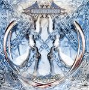

| Artist: | Ricocher |
| Title: | Chains |
| Label: | Progrock Records RIC 003 |
| Length(s): | 57 minutes |
| Year(s) of release: | 2004 |
| Month of review: | [07/2005] |
| 1) | Empty Chambers | 3.40 |
| 2) | Beyond Terms Of Humanity | 3.16 |
| 3) | Out Of Control | 5.36 |
| 4) | Bitter Tears | 3.02 |
Sand In Your Eyes
| 5) | Perception | 4.15 |
| 6) | Reflected | 4.19 |
| 7) | The Silhouette Of You | 5.17 |
| 8) | Whispering Voices | 5.12 |
Locked Inside
| 9) | Misguided Lights | 2.54 |
| 10) | Question Within The Answer | 5.34 |
| 11) | Point Of No Return | 7.13 |
| 12) | Breaking The Chain | 5.16 |
Bitter Tears is a relatively short moment of peace and quiet. The vocal melody is quite good here, and it certainly carries emotion. The second half of the song finds in a more orchestral, instrumental recap. We close with the vocals.
Sand In Your Eyes is the next semi-epic, again in three parts. Typically neo-progressive, Perception has that gait in the vein of early Marillion and Pendragon. The keyboards do save it a bit, while the guitars sound strong and full. Rather up-beat and easy-go-lucky, but pleasant for the ears. The sound is nicely full. Reflected takes a turn for the instrumental, building up a nice dark mood with keyboards and occasional interjections on guitar. The vocals come back in, in the same subdued mood, and we get some acoustic guitar as well. The vocal melody is quite elegant, and evolving. The sax that sets in comes in as a surprise, I did not spot it in the line-up. The Silhouette Of You opens with rhythm guitars, building up slowly, the bass sound being reminiscent of early Marillion. But this is more in the line of Everon and Saga. A rather singalong type vocal track this, and very accessible, but not bad at all: the catchy melodies do really 'catch'.
We move right into the orchestral opening of Whispering Voices. Not a long opening, since we skip into a pacey acoustic guitar passage soon after. The guitar solo is the high point of this track, which is rather up-beat and bombastic throughout.
Locked Inside is another multi-parted track, but with only two parts: the short Misguided Lights is a rather ballad like piece with acoustic guitar, slow vocals, some harpsichordish sounds and an electric guitar more softly in the back. The guitars harden as we approach Question Within The Answer. That one opens with typical Mark Kelly keyboards, from the days of Fugazi. Very much a singalong track, that is bound to do well live. A bit too cliche for me.
Point Of No Return brings us something different: the estranging percussive sounds remind of Genesis' Mama, but melodically this is a bit more friendly. This must be the best track on the album, slowly building up, and Boerekamp in good, emotional form. The song thunders along with some intense guitar solo's. Breaking The Chain closes down the album.